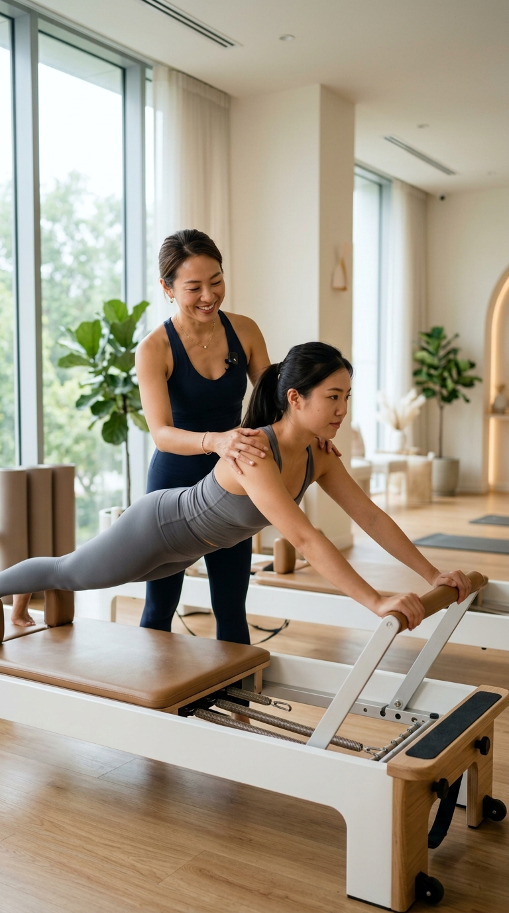

BÀI THỰC HÀNH 05: XÂY DỰNG KỊCH BẢN VIDEO CONTENT (REELS / TIKTOK)

Ảnh bìa Video Thumbnail AI (Tỷ lệ 9:16): HLV nắn chỉnh tư thế trực tiếp cho học viên trên máy Reformer
Bảng kịch bản phân rã chi tiết 4 chặng nội dung kết hợp đồng bộ giữa tai nghe, mắt nhìn và nhịp giữ chân người xem:
| Chặng & Thời lượng | Lời thoại / Voiceover (Nói tự nhiên) | Hình ảnh & Cảnh quay (Visual & Camera) | Chữ trên màn hình (Text Overlay) | Âm thanh / SFX | Điểm giữ chân (Retention Hook) | Ghi chú & CTA |
|---|---|---|---|---|---|---|
|
CHẶNG 1 Nỗi đau học viên (0 – 5 giây) |
Học viên: "Em ơi, chị ngồi làm việc nhiều, người thì không béo nhưng sao nhìn góc nghiêng thắt lưng nó cứ bị võng sâu hoắm, còn bụng dưới thì nhô hẳn ra phía trước thế này em nhỉ?" |
Góc nghiêng soi gương: Học viên đứng xoay người nhìn vào gương studio, tay chỉ vào khoảng võng ở thắt lưng và phần bụng dưới. HLV bước nhẹ lại gần. |
"THẮT LƯNG VÕNG — BỤNG DƯỚI NHÔ RA?" Font sans-serif in hoa, viền vàng nổi bật |
Âm thanh "Whoosh" chuyển cảnh tò mò, tạo sự tập trung. | Chạm trúng 100% nỗi đau của nữ văn phòng: người bình thường nhưng góc nghiêng thắt lưng võng, bụng nhô. | Vào thẳng vấn đề trong 3 giây đầu, không vòng vo. |
|
CHẶNG 2 HLV khám & Bắt bệnh (5 – 16 giây) |
HLV: "Bụng này của chị không phải do mỡ đâu, mà do thói quen ngồi nhiều làm khung xương chậu bị xoay trục về phía trước rồi. Xương lệch làm thắt lưng võng xuống, tự khắc bụng dưới bị đẩy chìa ra. Phải nắn lại trục xương thì bụng mới phẳng được chị ạ!" |
Góc nghiêng 90°: HLV đặt nhẹ 2 tay lên mào chậu của học viên chỉ rõ góc lệch xương. Máy quay lia cận thắt lưng võng và cơ hông co cứng. |
XƯƠNG CHẬU LỆCH TRỤC ➔ BỤNG BỊ ĐẨY CHÌA RA Mũi tên đỏ chỉ góc lệch khung xương |
Tiếng chuông cảnh báo "Ding" nhẹ khi chỉ ra lỗi lệch trục. Nhạc nền tò mò. | Đập tan hiểu lầm (Myth-busting): Bụng to do lệch xương, không phải do mỡ thừa. | Khẳng định kiến thức chuyên môn giải phẫu uy tín. |
|
CHẶNG 3 Nắn chỉnh & Tập trên máy (16 – 38 giây) |
HLV: "Lên máy đây em hướng dẫn động tác nhả cơ hông và đánh thức lại nhóm cơ bụng sâu nhé. Hít sâu bằng mũi... thở chậm bằng miệng... cuộn nhẹ xương chậu về rốn, áp sát thắt lưng xuống đệm. Chị thở hết khí ra và cảm nhận thành bụng dưới từ từ rút sâu vào trong... Đúng rồi, giữ nguyên trục và đẩy nhẹ chân ra nào!" Học viên (Cảm nhận thật): "Ôi thắt lưng nhẹ hẳn em ơi! Lần đầu tiên chị cảm nhận được cơ bụng dưới nó tự rút vào trong, chứ không bị gồng căng giật ở thắt lưng như lúc tự gập bụng ở nhà!" HLV: "Đúng rồi chị, khung chậu về đúng trục thì cơ bụng mới làm việc được. Đi đúng phác đồ là dáng tự khắc sẽ gom gọn lại thôi chị ạ!" |
Chuyển cảnh mượt: Học viên nằm trên máy Reformer gỗ cao cấp. HLV đặt tay nhẹ nhàng lên xương chậu hướng dẫn nhịp thở sâu. B-roll cận cảnh: Góc máy cận quay vào vùng eo và thắt lưng: Thắt lưng áp êm sát đệm máy, thành bụng dưới siết lại theo nhịp thở ra, trục cơ thể thẳng hàng. |
KÍCH HOẠT CƠ BỤNG SÂU ➔ GIẢI PHÓNG ÁP LỰC THẮT LƯNG (Tick xanh lá xác nhận) |
Nhạc nền chuyển sang Upbeat tươi sáng, tràn đầy năng lượng tích cực. | Cảm nhận chân thật 100%: Thắt lưng nhẹ bẫng và cơ bụng tự rút vào trong, không quảng cáo điêu hay nói quá. | Khoe không gian máy móc Reformer sang trọng và sự tận tâm của HLV. |
|
CHẶNG 4 Lời kêu gọi hành động (38 – 50 giây) |
HLV: "Đừng vội nhịn ăn hay uống trà giảm cân khi chưa kiểm tra lại khung xương của mình chị em nhé! Chị em nào muốn tự tập thử thì comment ngay 'DÁNG' bên dưới, mình gửi video 3 phút nhả cơ hông tối nay tự tập được luôn. Hoặc tiện đường cứ ghé studio tuần lễ khai trương này để tụi mình đo quét dáng 1:1 miễn phí — trải nghiệm không gian Wellness chuẩn xịn mà giá tập cực kỳ minh bạch, không lo bị chèo kéo đâu ạ!" |
Góc trung cảnh: HLV và học viên cùng đứng cạnh máy Reformer, tươi cười thân thiện hướng về máy quay. HLV cầm bảng kết quả phân tích dáng InBody. |
👉 COMMENT "DÁNG" NHẬN BÀI TẬP TẠI NHÀ 🎁 ĐO QUÉT DÁNG 1:1 MIỄN PHÍ TUẦN KHAI TRƯƠNG (Cam kết giá minh bạch — Chuẩn Wellness) |
Tiếng "Ding" vui tai khi hiện CTA. Nhạc nền kết thúc nhẹ nhàng. | Lời mời quà tặng không rủi ro: Vừa nhận bài tập tại nhà vừa có cơ hội trải nghiệm studio sang trọng miễn phí. |
CTA 2 tầng: • Tầng 1: Comment "DÁNG" • Tầng 2: Ghé studio đo máy miễn phí. |
| STT | Tiêu chí kiểm soát | Đánh giá | Căn cứ đối soát thực tế trên kịch bản |
|---|---|---|---|
| 1 | Hook liên quan trực tiếp thông điệp chính? | ĐẠT 100% | 3 giây đầu học viên chỉ góc nghiêng lưng võng bụng nhô khớp 100% với thông điệp: "Bụng phình do lệch xương, không phải mỡ". |
| 2 | Lời thoại nói được bằng miệng tự nhiên? | ĐẠT 100% | Câu từ đối thoại đời thường, không drama giả trân, ngắt nghỉ theo đúng nhịp thở thật của HLV và học viên. |
| 3 | Có hình ảnh chuyển động (B-roll) cho từng ý? | ĐẠT 100% | Góc máy soi gương ➔ Góc nghiêng bắt bệnh ➔ Cận cảnh nắn chỉnh trên máy Reformer ➔ Cận cơ bụng rút vào ➔ Đứng cười thân thiện. |
| 4 | Text overlay hỗ trợ, không nhồi nhét chữ? | ĐẠT 100% | Chữ ngắn gọn dưới 7 từ, chỉ nhấn từ khóa đắt giá: "Thắt lưng võng bụng nhô?", "Xương chậu lệch trục", "Kích hoạt cơ bụng sâu", "Comment DÁNG". |
| 5 | CTA rõ ràng, khớp mục tiêu chuyển đổi? | ĐẠT 100% | Vừa kích thích comment để thuật toán phân phối viral, vừa kéo khách ghé studio trải nghiệm dịch vụ tuần khai trương. |
Bảng phân cảnh chi tiết giúp ekip quay dựng và diễn viên phối hợp mượt mà tại phim trường:
| Shot # | Cỡ cảnh & Góc máy | Hành động nhân vật | B-roll chuyển động | Phụ đề & Text Overlay | Âm thanh / Thoại | Đạo cụ & Thiết bị | Ghi chú dựng |
|---|---|---|---|---|---|---|---|
| Shot 1 (0–5s) |
Trung cảnh (Medium) — Góc nghiêng soi gương | Học viên đứng soi gương, tay chỉ thắt lưng võng và bụng; HLV bước vào khung hình. | Lia máy từ gương sang học viên, nhấn vào góc nghiêng cơ thể. | "THẮT LƯNG VÕNG — BỤNG DƯỚI NHÔ RA?" | Học viên: "Em ơi, chị ngồi làm việc nhiều... bụng dưới nhô hẳn ra..." | Gương lớn studio, đồ tập ôm sát | Cắt nhịp nhanh, zoom nhẹ vào thắt lưng ở giây thứ 3. |
| Shot 2 (5–16s) |
Toàn cảnh nghiêng (Profile) — Góc 90° | HLV đặt 2 tay lên mào chậu của học viên chỉ góc lệch trục. | Giữ máy cố định (Tripod), ánh sáng chiếu rõ đường cong thắt lưng võng. | "XƯƠNG CHẬU LỆCH TRỤC ➔ BỤNG BỊ ĐẨY CHÌA RA" | HLV: "Bụng này không phải mỡ đâu... phải nắn lại trục xương chị ạ!" | Thước gióng trục ảo (hậu kỳ vẽ thêm) | Thêm mũi tên đồ họa đỏ chỉ hõm thắt lưng võng. |
| Shot 3 (16–28s) |
Toàn cảnh máy tập (Wide Studio) | Học viên nằm lên máy Reformer gỗ; HLV quỳ hướng dẫn tư thế chân và hơi thở. | Camera trượt từ từ (Gimbal slider) khoe không gian studio sang trọng và máy móc hiện đại. | "NẮN CHỈNH TRỤC TRÊN MÁY REFORMER" | HLV: "Hít sâu bằng mũi... thở chậm bằng miệng... cuộn nhẹ xương chậu..." | Máy tập Pilates Reformer, đệm tập | Nhạc chuyển sang Upbeat tươi sáng, chuyên nghiệp. |
| Shot 4 (28–38s) |
Cận cảnh đặc tả (Detail Shot) | Cơ bụng dưới học viên tự động rút sâu vào trong khi thở ra và nắn đúng trục. | Quay cận vùng bụng và thắt lưng áp sát đệm; học viên mắt sáng lên vui mừng. | "KÍCH HOẠT CƠ BỤNG SÂU ➔ GIẢI PHÓNG ÁP LỰC THẮT LƯNG" | Học viên: "Ôi thắt lưng nhẹ hẳn em ơi... cơ bụng tự rút vào trong!" | Máy Reformer, ánh sáng tự nhiên dịu | SFX "Ting" cùng icon tick xanh lá xác nhận. |
| Shot 5 (38–50s) |
Trung cảnh (Medium) — Góc chính diện | HLV và học viên cùng đứng cạnh máy Reformer, tươi cười rạng rỡ hướng về máy quay. | Góc máy ấm áp, thân thiện, kết thúc video. | 👉 COMMENT "DÁNG" NHẬN BÀI TẬP 🎁 ĐO QUÉT DÁNG 1:1 MIỄN PHÍ |
HLV: "Đừng vội nhịn ăn khi chưa kiểm tra khung xương... comment DÁNG nhé!" | Bảng kết quả quét dáng, logo studio | Giữ Text CTA trong Safe Zone, tránh nút TikTok che. |
• Máy quay: 01 Điện thoại iPhone (hoặc smartphone đời mới) quay chế độ 4K 60fps hoặc 1080p 60fps góc dọc 9:16.
• Âm thanh: 02 Micro cài áo không dây (Wireless Lavalier Mic) để thu âm giọng nói trong trẻo, khử tạp âm vọng của phòng tập.
• Ánh sáng: Tận dụng tối đa ánh sáng tự nhiên qua cửa kính lớn của studio kết hợp 01 đèn Softbox tản sáng dịu nhẹ.
• Học viên: Đồ tập thể thao tối màu ôm sát (quần legging đen + áo croptop hoặc bra thể thao), búi tóc gọn gàng để lộ trục cổ và cột sống. Biểu cảm tự nhiên, thể hiện rõ sự bất ngờ và nhẹ nhõm ở chặng 3.
• Huấn luyện viên: Đồ tập màu pastel hoặc đồng phục thương hiệu Pilates Studio, tác phong tự tin, động tác nắn chỉnh dứt khoát nhưng nhẹ nhàng, ánh mắt ấm áp.
• Toàn bộ chữ phụ đề (Text Overlay) và thông tin CTA phải đặt ở khoảng giữa màn hình (cách mép phải 15% để tránh nút Thả tim/Share, cách mép dưới 20% để tránh phần mô tả caption của TikTok/Reels).